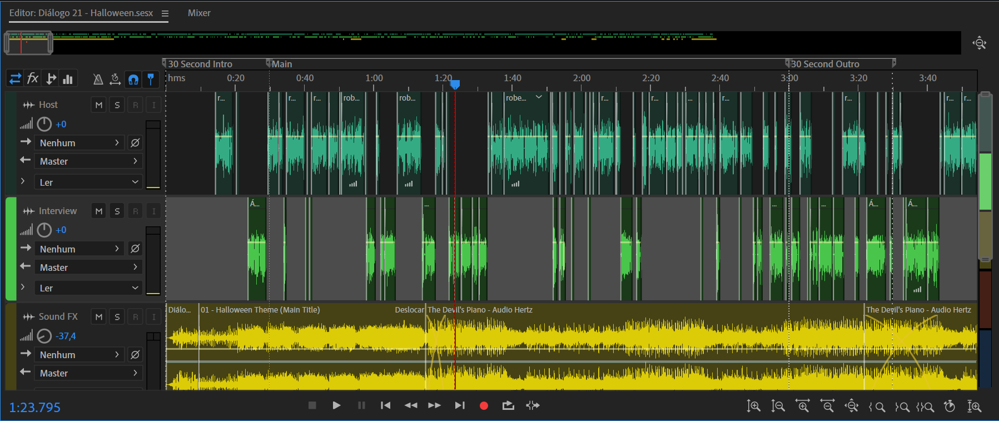

SOBRE O DIÁLOGO
O Diálogo Podcast foi criado por Tiago Calado e Roberto Falcão em março de 2021. A ideia geral do programa é contar histórias com temas e as vezes algum convidado que goste de um bom papo.
O projeto já conta com mais de 800 plays no ultimo ano, e em 2022 se espera a continuação do trabalho e o crescimento do podcast.
OUÇA NO SPOTIFY!
Nossa Sede
SOMOS DO NORTE!
Benefícios
- Histórias inusitadas
- Os melhores convidados
- Humor
- Melhor dupla de Hosts
- Pontualidade
- Gratuito